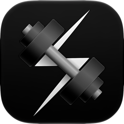

渐进负荷
专注个人健身力量训练记录原生级APP
技术支持页面
常见问题
开启 iCloud 同步后数据没有同步到其他设备
iCloud 同步只同步训练数据（档案、训练计划、训练记录、自定义器械与动作、偏好设置），健康数据始终只保存在本机。请确认：
- 两台设备使用同一个 Apple 账户，且都已开启同步（我的 → 数据管理 → iCloud 数据同步）。
- iCloud 云盘已开启：iOS 设置 → Apple 账户 → iCloud → 确保「iCloud 云盘」打开。
- 同步可能需要几分钟，可在「数据管理」页查看同步状态或点「立即同步」，并在两台设备上都重启一次应用。
若仍不生效，可在一台设备上导出 JSON 备份（我的 → 数据管理 → 导出文件），在另一台设备导入。
组间休息结束没有提醒
到点提醒依赖系统通知。请检查 iOS 设置 → 通知 → 渐进负荷，确认「允许通知」已打开并开启声音。若你在应用内开启了「使用系统闹钟计时」（我的 → 设置），提醒由系统闹钟负责，请同时确认闹钟权限。
训练提醒的时间是怎么定的
提醒跟随你真实排定的训练日：由未来 7 天内已安排的训练日计算提醒时点。调整训练日安排后提醒会自动重排；把某天设为休息日即不再提醒。可在 我的 → 设置 → 训练提醒 中关闭。
如何备份或迁移数据
我的 → 数据管理 → 导出文件，可生成包含全部数据的 JSON 文件，保存到「文件」App 或发送给自己，建议定期导出备份。新设备上选择「导入文件」即可恢复：导入会替换现有全部数据，执行前先显示对比并需要你二次确认，导入前会自动生成本机备份。页面底部的「最近自动备份」可在需要时找回。
如何把其他健身 App 的记录导入
我的 → 数据管理 → 导入其他 App 记录，选择其他健身应用导出的记录文件即可。导入只追加训练历史、不覆盖现有数据，导入的记录会计入统计；如需要清除，可在同页「删除其他 App 的记录」单独删除，不影响你自己记录的数据。
建议的重量是怎么算出来的
建议基于你最近一次同动作的训练记录，按渐进超负荷原则给出：RIR（最后一组还能多做几次）、目标完成度、疼痛与次日反应都会参与判定。每条建议卡片上都直接写着规则名称和理由，并给出「采用 / 不采用」选择——最终以你的实际记录为准。
重量单位怎么切换
我的 → 设置 → 显示单位，可在 kg 与 lb 之间切换。切换只影响显示，数据本身按原值保留，可随时切回。
界面颜色能换吗
可以。我的 → 设置 → 主题：单击空槽位选色、单击已存颜色立即应用；点第一个预置蓝色槽即可恢复默认。主题色会跟随 iCloud 同步到其他设备。
想重新开始，如何清空数据
我的 → 数据管理 → 清空全部数据。清空前会自动生成本机备份；该操作会删除全部数据（含 iCloud 中的训练数据），不可撤销，清空后会进入新手引导。
Apple Watch 如何使用
在 iPhone 上安装应用后，Watch 端会自动安装。手表可独立完成训练记录，结束后在 iPhone「我的 → 待导入记录」中同步回手机；也可以在手表上记录有氧。请保持手表与 iPhone 的蓝牙连接。
联系我们
使用过程中遇到任何问题，或有任何建议，欢迎通过以下方式联系。工作时间：周一至周五（工作日），法定节假日及周末休息。
Frequently Asked Questions
Data is not syncing to my other device after enabling iCloud sync
iCloud sync covers training data only (profile, plans, workout logs, custom equipment/exercises, preferences). Health data always stays on each device. Please check:
- Both devices are signed in to the same Apple Account and have sync enabled (Profile → Data Management → iCloud Data Sync).
- iCloud Drive is on: iOS Settings → Apple Account → iCloud → make sure "iCloud Drive" is enabled.
- Sync can take a few minutes. Check the sync status on the Data Management page or tap "Sync Now", and relaunch the app on both devices.
If it still fails, export a JSON backup on one device (Profile → Data Management → Export File) and import it on the other.
No alert when the rest timer finishes
The end-of-rest alert relies on system notifications. Check iOS Settings → Notifications → ProgressiveLoad and make sure notifications and sounds are allowed. If "Use System Alarm Timer" is enabled in the app (Profile → Settings), the alert is handled by the system alarm — make sure the alarm permission is granted as well.
How are training reminders scheduled
Reminders follow your actual schedule: they are computed from training days you have planned in the next 7 days. Changing your plan re-schedules them automatically; setting a day to rest stops its reminder. You can turn reminders off in Profile → Settings → Training Reminders.
How to back up or migrate my data
Profile → Data Management → Export File produces a complete JSON file you can save to the Files app or send to yourself — we recommend exporting regularly. On a new device, choose "Import File" to restore: importing replaces all current data, shows a comparison and asks for your confirmation first, and an automatic local backup is created before it runs. The "Latest Auto Backup" row at the bottom of the page lets you recover when needed.
How to import my history from another fitness app
Profile → Data Management → Import from Another App, then pick the record file exported by your other fitness app. Importing only appends workout history and never overwrites your existing data; imported workouts count toward your statistics. To remove them later, use "Delete Imported Records" on the same page — your own logged data is not affected.
How are the suggested weights calculated
Suggestions are based on your most recent performance of the same exercise, following progressive overload principles: RIR (how many more reps you had left), target completion, pain and next-day response all factor in. Every suggestion card shows the rule name and its reason, with "Adopt / Dismiss" choices — your actual logged performance always comes first.
How to switch weight units
Profile → Settings → Display Unit, switch between kg and lb. Only the display changes; the stored values are untouched and you can switch back anytime.
Can I change the accent color
Yes. Profile → Settings → Theme: tap an empty slot to pick a color, tap a saved color to apply it instantly; tap the first preset blue slot to restore the default. The theme color syncs to your other devices via iCloud.
How to start over and erase all data
Profile → Data Management → Delete All Data. An automatic local backup is created first; the wipe removes everything (including synced training data in iCloud) and cannot be undone, and the app returns to the onboarding flow afterwards.
How to use the Apple Watch app
The Watch app installs automatically once the iPhone app is installed. You can log a full workout on the watch and sync it back via "Profile → Pending Imports" on the iPhone; cardio can also be logged on the watch. Keep Bluetooth on between watch and iPhone.
Contact Us
Questions or feedback? Reach us via the channels below. Working hours: Monday to Friday (business days); closed on weekends and public holidays.
WeChat
Scan to add; mention "ProgressiveLoad"
Xiaohongshu (RED)
Scan to follow for updates and tips